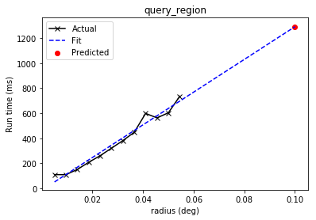
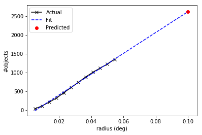

This tutorial requires astroquery 0.3.5 or greater. Cone Search
allows you to query a catalog of astronomical sources and obtain those
that lie within a cone of a given radius around the given position. For
more information on Cone Search, see
http://astroquery.readthedocs.io/en/latest/vo_conesearch/vo_conesearch.html.
In[1]:
# Python standard library
import time
import warnings
# Third-party software
import numpy as np
# Astropy
from astropy import coordinates as coord
from astropy import units as u
from astropy.table import Table
# Astroquery
import astroquery
from astroquery.simbad import Simbad
from astroquery.vo_conesearch import conf, conesearch, vos_catalog
# Set up matplotlib
import matplotlib.pyplot as plt
%matplotlib inline
It might be useful to list the available Cone Search catalogs first. By default, catalogs that pass nightly validation are included. Validation is hosted by Space Telescope Science Institute (STScI).
In[2]:
conesearch.list_catalogs()
Out[2]:
Downloading http://stsdas.stsci.edu/astrolib/vo_databases/conesearch_good.json [Done]
['SDSS DR7 - Sloan Digital Sky Survey Data Release 7 1',
'SDSS DR7 - Sloan Digital Sky Survey Data Release 7 2',
'SDSS DR7 - Sloan Digital Sky Survey Data Release 7 3',
'SDSS DR7 - Sloan Digital Sky Survey Data Release 7 4',
'SDSS DR8 - Sloan Digital Sky Survey Data Release 8 2',
'The HST Guide Star Catalog, Version 1.1 (Lasker+ 1992) 1',
'The HST Guide Star Catalog, Version 1.2 (Lasker+ 1996) 1',
'The HST Guide Star Catalog, Version GSC-ACT (Lasker+ 1996-99) 1',
'The USNO-A2.0 Catalogue (Monet+ 1998) 1',
'Two Micron All Sky Survey (2MASS) 1',
'Two Micron All Sky Survey (2MASS) 2',
'USNO-A2 Catalogue 1']
Next, let’s pick an astronomical object of interest. For example, M31.
In[3]:
c = coord.SkyCoord.from_name('M31', frame='icrs')
print(c)
Out[3]:
<SkyCoord (ICRS): (ra, dec) in deg
(10.6847083, 41.26875)>
By default, a basic Cone Search goes through the list of catalogs and
stops at the first one that returns non-empty VO table. Let’s search
for objects within 0.1 degree around M31. You will see a lot of warnings
that were generated by VO table parser but ignored by Cone Search
service validator. VO compliance enforced by Cone Search providers is
beyond the control of astroquery.vo_conesearch package.
In[4]:
result = conesearch.conesearch(c, 0.1 * u.degree)
Out[4]:
Trying http://wfaudata.roe.ac.uk/sdssdr7-dsa/DirectCone?DSACAT=SDSS_DR7&DSATAB=Galaxy&
WARNING: W50: http://wfaudata.roe.ac.uk/sdssdr7-dsa/DirectCone?DSACAT=SDSS_DR7&DSATAB=Galaxy&RA=10.6847083&DEC=41.26875&SR=0.1&VERB=1:66:0: W50: Invalid unit string 'deg/day' [astropy.io.votable.tree]
WARNING: W50: http://wfaudata.roe.ac.uk/sdssdr7-dsa/DirectCone?DSACAT=SDSS_DR7&DSATAB=Galaxy&RA=10.6847083&DEC=41.26875&SR=0.1&VERB=1:69:0: W50: Invalid unit string 'deg/day' [astropy.io.votable.tree]
WARNING: W50: http://wfaudata.roe.ac.uk/sdssdr7-dsa/DirectCone?DSACAT=SDSS_DR7&DSATAB=Galaxy&RA=10.6847083&DEC=41.26875&SR=0.1&VERB=1:72:0: W50: Invalid unit string 'deg/day' [astropy.io.votable.tree]
WARNING: W50: http://wfaudata.roe.ac.uk/sdssdr7-dsa/DirectCone?DSACAT=SDSS_DR7&DSATAB=Galaxy&RA=10.6847083&DEC=41.26875&SR=0.1&VERB=1:75:0: W50: Invalid unit string 'deg/day' [astropy.io.votable.tree]
WARNING: W50: http://wfaudata.roe.ac.uk/sdssdr7-dsa/DirectCone?DSACAT=SDSS_DR7&DSATAB=Galaxy&RA=10.6847083&DEC=41.26875&SR=0.1&VERB=1:138:0: W50: Invalid unit string 'maggies/arcsec^2' [astropy.io.votable.tree]
WARNING: W50: http://wfaudata.roe.ac.uk/sdssdr7-dsa/DirectCone?DSACAT=SDSS_DR7&DSATAB=Galaxy&RA=10.6847083&DEC=41.26875&SR=0.1&VERB=1:141:0: W50: Invalid unit string 'maggies/arcsec^2' [astropy.io.votable.tree]
WARNING: W50: http://wfaudata.roe.ac.uk/sdssdr7-dsa/DirectCone?DSACAT=SDSS_DR7&DSATAB=Galaxy&RA=10.6847083&DEC=41.26875&SR=0.1&VERB=1:144:0: W50: Invalid unit string 'maggies/arcsec^2' [astropy.io.votable.tree]
WARNING: W50: http://wfaudata.roe.ac.uk/sdssdr7-dsa/DirectCone?DSACAT=SDSS_DR7&DSATAB=Galaxy&RA=10.6847083&DEC=41.26875&SR=0.1&VERB=1:147:0: W50: Invalid unit string 'maggies/arcsec^2' [astropy.io.votable.tree]
WARNING: W50: http://wfaudata.roe.ac.uk/sdssdr7-dsa/DirectCone?DSACAT=SDSS_DR7&DSATAB=Galaxy&RA=10.6847083&DEC=41.26875&SR=0.1&VERB=1:150:0: W50: Invalid unit string 'maggies/arcsec^2' [astropy.io.votable.tree]
WARNING: W50: http://wfaudata.roe.ac.uk/sdssdr7-dsa/DirectCone?DSACAT=SDSS_DR7&DSATAB=Galaxy&RA=10.6847083&DEC=41.26875&SR=0.1&VERB=1:153:0: W50: Invalid unit string 'maggies/arcsec^2' (suppressing further warnings of this type...) [astropy.io.votable.tree]
Trying http://wfaudata.roe.ac.uk/sdssdr7-dsa/DirectCone?DSACAT=SDSS_DR7&DSATAB=Star&
WARNING: W25: ?:?:?: W25: 'http://wfaudata.roe.ac.uk/sdssdr7-dsa/DirectCone?DSACAT=SDSS_DR7&DSATAB=Galaxy&' failed with: Catalog server 'http://wfaudata.roe.ac.uk/sdssdr7-dsa/DirectCone?DSACAT=SDSS_DR7&DSATAB=Galaxy&' returned 0 result [astroquery.vo_conesearch.conesearch]
WARNING: W50: http://wfaudata.roe.ac.uk/sdssdr7-dsa/DirectCone?DSACAT=SDSS_DR7&DSATAB=Star&RA=10.6847083&DEC=41.26875&SR=0.1&VERB=1:66:0: W50: Invalid unit string 'deg/day' [astropy.io.votable.tree]
WARNING: W50: http://wfaudata.roe.ac.uk/sdssdr7-dsa/DirectCone?DSACAT=SDSS_DR7&DSATAB=Star&RA=10.6847083&DEC=41.26875&SR=0.1&VERB=1:69:0: W50: Invalid unit string 'deg/day' [astropy.io.votable.tree]
WARNING: W50: http://wfaudata.roe.ac.uk/sdssdr7-dsa/DirectCone?DSACAT=SDSS_DR7&DSATAB=Star&RA=10.6847083&DEC=41.26875&SR=0.1&VERB=1:72:0: W50: Invalid unit string 'deg/day' [astropy.io.votable.tree]
WARNING: W50: http://wfaudata.roe.ac.uk/sdssdr7-dsa/DirectCone?DSACAT=SDSS_DR7&DSATAB=Star&RA=10.6847083&DEC=41.26875&SR=0.1&VERB=1:75:0: W50: Invalid unit string 'deg/day' [astropy.io.votable.tree]
WARNING: W50: http://wfaudata.roe.ac.uk/sdssdr7-dsa/DirectCone?DSACAT=SDSS_DR7&DSATAB=Star&RA=10.6847083&DEC=41.26875&SR=0.1&VERB=1:138:0: W50: Invalid unit string 'maggies/arcsec^2' [astropy.io.votable.tree]
WARNING: W50: http://wfaudata.roe.ac.uk/sdssdr7-dsa/DirectCone?DSACAT=SDSS_DR7&DSATAB=Star&RA=10.6847083&DEC=41.26875&SR=0.1&VERB=1:141:0: W50: Invalid unit string 'maggies/arcsec^2' [astropy.io.votable.tree]
WARNING: W50: http://wfaudata.roe.ac.uk/sdssdr7-dsa/DirectCone?DSACAT=SDSS_DR7&DSATAB=Star&RA=10.6847083&DEC=41.26875&SR=0.1&VERB=1:144:0: W50: Invalid unit string 'maggies/arcsec^2' [astropy.io.votable.tree]
WARNING: W50: http://wfaudata.roe.ac.uk/sdssdr7-dsa/DirectCone?DSACAT=SDSS_DR7&DSATAB=Star&RA=10.6847083&DEC=41.26875&SR=0.1&VERB=1:147:0: W50: Invalid unit string 'maggies/arcsec^2' [astropy.io.votable.tree]
WARNING: W50: http://wfaudata.roe.ac.uk/sdssdr7-dsa/DirectCone?DSACAT=SDSS_DR7&DSATAB=Star&RA=10.6847083&DEC=41.26875&SR=0.1&VERB=1:150:0: W50: Invalid unit string 'maggies/arcsec^2' [astropy.io.votable.tree]
WARNING: W50: http://wfaudata.roe.ac.uk/sdssdr7-dsa/DirectCone?DSACAT=SDSS_DR7&DSATAB=Star&RA=10.6847083&DEC=41.26875&SR=0.1&VERB=1:153:0: W50: Invalid unit string 'maggies/arcsec^2' (suppressing further warnings of this type...) [astropy.io.votable.tree]
WARNING: W25: ?:?:?: W25: 'http://wfaudata.roe.ac.uk/sdssdr7-dsa/DirectCone?DSACAT=SDSS_DR7&DSATAB=Star&' failed with: Catalog server 'http://wfaudata.roe.ac.uk/sdssdr7-dsa/DirectCone?DSACAT=SDSS_DR7&DSATAB=Star&' returned 0 result [astroquery.vo_conesearch.conesearch]
Trying http://wfaudata.roe.ac.uk/sdssdr7-dsa/DirectCone?DSACAT=SDSS_DR7&DSATAB=PhotoObjAll&
WARNING: W50: http://wfaudata.roe.ac.uk/sdssdr7-dsa/DirectCone?DSACAT=SDSS_DR7&DSATAB=PhotoObjAll&RA=10.6847083&DEC=41.26875&SR=0.1&VERB=1:66:0: W50: Invalid unit string 'deg/day' [astropy.io.votable.tree]
WARNING: W50: http://wfaudata.roe.ac.uk/sdssdr7-dsa/DirectCone?DSACAT=SDSS_DR7&DSATAB=PhotoObjAll&RA=10.6847083&DEC=41.26875&SR=0.1&VERB=1:69:0: W50: Invalid unit string 'deg/day' [astropy.io.votable.tree]
WARNING: W50: http://wfaudata.roe.ac.uk/sdssdr7-dsa/DirectCone?DSACAT=SDSS_DR7&DSATAB=PhotoObjAll&RA=10.6847083&DEC=41.26875&SR=0.1&VERB=1:72:0: W50: Invalid unit string 'deg/day' [astropy.io.votable.tree]
WARNING: W50: http://wfaudata.roe.ac.uk/sdssdr7-dsa/DirectCone?DSACAT=SDSS_DR7&DSATAB=PhotoObjAll&RA=10.6847083&DEC=41.26875&SR=0.1&VERB=1:75:0: W50: Invalid unit string 'deg/day' [astropy.io.votable.tree]
WARNING: W50: http://wfaudata.roe.ac.uk/sdssdr7-dsa/DirectCone?DSACAT=SDSS_DR7&DSATAB=PhotoObjAll&RA=10.6847083&DEC=41.26875&SR=0.1&VERB=1:138:0: W50: Invalid unit string 'maggies/arcsec^2' [astropy.io.votable.tree]
WARNING: W50: http://wfaudata.roe.ac.uk/sdssdr7-dsa/DirectCone?DSACAT=SDSS_DR7&DSATAB=PhotoObjAll&RA=10.6847083&DEC=41.26875&SR=0.1&VERB=1:141:0: W50: Invalid unit string 'maggies/arcsec^2' [astropy.io.votable.tree]
WARNING: W50: http://wfaudata.roe.ac.uk/sdssdr7-dsa/DirectCone?DSACAT=SDSS_DR7&DSATAB=PhotoObjAll&RA=10.6847083&DEC=41.26875&SR=0.1&VERB=1:144:0: W50: Invalid unit string 'maggies/arcsec^2' [astropy.io.votable.tree]
WARNING: W50: http://wfaudata.roe.ac.uk/sdssdr7-dsa/DirectCone?DSACAT=SDSS_DR7&DSATAB=PhotoObjAll&RA=10.6847083&DEC=41.26875&SR=0.1&VERB=1:147:0: W50: Invalid unit string 'maggies/arcsec^2' [astropy.io.votable.tree]
WARNING: W50: http://wfaudata.roe.ac.uk/sdssdr7-dsa/DirectCone?DSACAT=SDSS_DR7&DSATAB=PhotoObjAll&RA=10.6847083&DEC=41.26875&SR=0.1&VERB=1:150:0: W50: Invalid unit string 'maggies/arcsec^2' [astropy.io.votable.tree]
WARNING: W50: http://wfaudata.roe.ac.uk/sdssdr7-dsa/DirectCone?DSACAT=SDSS_DR7&DSATAB=PhotoObjAll&RA=10.6847083&DEC=41.26875&SR=0.1&VERB=1:153:0: W50: Invalid unit string 'maggies/arcsec^2' (suppressing further warnings of this type...) [astropy.io.votable.tree]
Trying http://wfaudata.roe.ac.uk/sdssdr7-dsa/DirectCone?DSACAT=SDSS_DR7&DSATAB=PhotoObj&
WARNING: W25: ?:?:?: W25: 'http://wfaudata.roe.ac.uk/sdssdr7-dsa/DirectCone?DSACAT=SDSS_DR7&DSATAB=PhotoObjAll&' failed with: Catalog server 'http://wfaudata.roe.ac.uk/sdssdr7-dsa/DirectCone?DSACAT=SDSS_DR7&DSATAB=PhotoObjAll&' returned 0 result [astroquery.vo_conesearch.conesearch]
WARNING: W50: http://wfaudata.roe.ac.uk/sdssdr7-dsa/DirectCone?DSACAT=SDSS_DR7&DSATAB=PhotoObj&RA=10.6847083&DEC=41.26875&SR=0.1&VERB=1:66:0: W50: Invalid unit string 'deg/day' [astropy.io.votable.tree]
WARNING: W50: http://wfaudata.roe.ac.uk/sdssdr7-dsa/DirectCone?DSACAT=SDSS_DR7&DSATAB=PhotoObj&RA=10.6847083&DEC=41.26875&SR=0.1&VERB=1:69:0: W50: Invalid unit string 'deg/day' [astropy.io.votable.tree]
WARNING: W50: http://wfaudata.roe.ac.uk/sdssdr7-dsa/DirectCone?DSACAT=SDSS_DR7&DSATAB=PhotoObj&RA=10.6847083&DEC=41.26875&SR=0.1&VERB=1:72:0: W50: Invalid unit string 'deg/day' [astropy.io.votable.tree]
WARNING: W50: http://wfaudata.roe.ac.uk/sdssdr7-dsa/DirectCone?DSACAT=SDSS_DR7&DSATAB=PhotoObj&RA=10.6847083&DEC=41.26875&SR=0.1&VERB=1:75:0: W50: Invalid unit string 'deg/day' [astropy.io.votable.tree]
WARNING: W50: http://wfaudata.roe.ac.uk/sdssdr7-dsa/DirectCone?DSACAT=SDSS_DR7&DSATAB=PhotoObj&RA=10.6847083&DEC=41.26875&SR=0.1&VERB=1:138:0: W50: Invalid unit string 'maggies/arcsec^2' [astropy.io.votable.tree]
WARNING: W50: http://wfaudata.roe.ac.uk/sdssdr7-dsa/DirectCone?DSACAT=SDSS_DR7&DSATAB=PhotoObj&RA=10.6847083&DEC=41.26875&SR=0.1&VERB=1:141:0: W50: Invalid unit string 'maggies/arcsec^2' [astropy.io.votable.tree]
WARNING: W50: http://wfaudata.roe.ac.uk/sdssdr7-dsa/DirectCone?DSACAT=SDSS_DR7&DSATAB=PhotoObj&RA=10.6847083&DEC=41.26875&SR=0.1&VERB=1:144:0: W50: Invalid unit string 'maggies/arcsec^2' [astropy.io.votable.tree]
WARNING: W50: http://wfaudata.roe.ac.uk/sdssdr7-dsa/DirectCone?DSACAT=SDSS_DR7&DSATAB=PhotoObj&RA=10.6847083&DEC=41.26875&SR=0.1&VERB=1:147:0: W50: Invalid unit string 'maggies/arcsec^2' [astropy.io.votable.tree]
WARNING: W50: http://wfaudata.roe.ac.uk/sdssdr7-dsa/DirectCone?DSACAT=SDSS_DR7&DSATAB=PhotoObj&RA=10.6847083&DEC=41.26875&SR=0.1&VERB=1:150:0: W50: Invalid unit string 'maggies/arcsec^2' [astropy.io.votable.tree]
WARNING: W50: http://wfaudata.roe.ac.uk/sdssdr7-dsa/DirectCone?DSACAT=SDSS_DR7&DSATAB=PhotoObj&RA=10.6847083&DEC=41.26875&SR=0.1&VERB=1:153:0: W50: Invalid unit string 'maggies/arcsec^2' (suppressing further warnings of this type...) [astropy.io.votable.tree]
Trying http://wfaudata.roe.ac.uk/sdssdr8-dsa/DirectCone?DSACAT=SDSS_DR8&DSATAB=SpecObjAll&
WARNING: W25: ?:?:?: W25: 'http://wfaudata.roe.ac.uk/sdssdr7-dsa/DirectCone?DSACAT=SDSS_DR7&DSATAB=PhotoObj&' failed with: Catalog server 'http://wfaudata.roe.ac.uk/sdssdr7-dsa/DirectCone?DSACAT=SDSS_DR7&DSATAB=PhotoObj&' returned 0 result [astroquery.vo_conesearch.conesearch]
WARNING: W50: http://wfaudata.roe.ac.uk/sdssdr8-dsa/DirectCone?DSACAT=SDSS_DR8&DSATAB=SpecObjAll&RA=10.6847083&DEC=41.26875&SR=0.1&VERB=1:51:0: W50: Invalid unit string 'days' [astropy.io.votable.tree]
WARNING: W50: http://wfaudata.roe.ac.uk/sdssdr8-dsa/DirectCone?DSACAT=SDSS_DR8&DSATAB=SpecObjAll&RA=10.6847083&DEC=41.26875&SR=0.1&VERB=1:237:0: W50: Invalid unit string 'Angstroms' [astropy.io.votable.tree]
WARNING: W50: http://wfaudata.roe.ac.uk/sdssdr8-dsa/DirectCone?DSACAT=SDSS_DR8&DSATAB=SpecObjAll&RA=10.6847083&DEC=41.26875&SR=0.1&VERB=1:240:0: W50: Invalid unit string 'Angstroms' [astropy.io.votable.tree]
WARNING: W50: http://wfaudata.roe.ac.uk/sdssdr8-dsa/DirectCone?DSACAT=SDSS_DR8&DSATAB=SpecObjAll&RA=10.6847083&DEC=41.26875&SR=0.1&VERB=1:345:0: W50: Invalid unit string 'nanomaggies' [astropy.io.votable.tree]
WARNING: W50: http://wfaudata.roe.ac.uk/sdssdr8-dsa/DirectCone?DSACAT=SDSS_DR8&DSATAB=SpecObjAll&RA=10.6847083&DEC=41.26875&SR=0.1&VERB=1:348:0: W50: Invalid unit string 'nanomaggies' [astropy.io.votable.tree]
WARNING: W50: http://wfaudata.roe.ac.uk/sdssdr8-dsa/DirectCone?DSACAT=SDSS_DR8&DSATAB=SpecObjAll&RA=10.6847083&DEC=41.26875&SR=0.1&VERB=1:351:0: W50: Invalid unit string 'nanomaggies' [astropy.io.votable.tree]
WARNING: W50: http://wfaudata.roe.ac.uk/sdssdr8-dsa/DirectCone?DSACAT=SDSS_DR8&DSATAB=SpecObjAll&RA=10.6847083&DEC=41.26875&SR=0.1&VERB=1:354:0: W50: Invalid unit string 'nanomaggies' [astropy.io.votable.tree]
WARNING: W50: http://wfaudata.roe.ac.uk/sdssdr8-dsa/DirectCone?DSACAT=SDSS_DR8&DSATAB=SpecObjAll&RA=10.6847083&DEC=41.26875&SR=0.1&VERB=1:357:0: W50: Invalid unit string 'nanomaggies' [astropy.io.votable.tree]
WARNING: W50: http://wfaudata.roe.ac.uk/sdssdr8-dsa/DirectCone?DSACAT=SDSS_DR8&DSATAB=SpecObjAll&RA=10.6847083&DEC=41.26875&SR=0.1&VERB=1:360:0: W50: Invalid unit string 'nanomaggies' [astropy.io.votable.tree]
WARNING: W50: http://wfaudata.roe.ac.uk/sdssdr8-dsa/DirectCone?DSACAT=SDSS_DR8&DSATAB=SpecObjAll&RA=10.6847083&DEC=41.26875&SR=0.1&VERB=1:363:0: W50: Invalid unit string 'nanomaggies' (suppressing further warnings of this type...) [astropy.io.votable.tree]
WARNING: W06: http://wfaudata.roe.ac.uk/sdssdr8-dsa/DirectCone?DSACAT=SDSS_DR8&DSATAB=SpecObjAll&RA=10.6847083&DEC=41.26875&SR=0.1&VERB=1:462:0: W06: Invalid UCD 'IMAGE?': UCD has invalid character '?' in 'IMAGE?' [astropy.io.votable.tree]
WARNING: W25: ?:?:?: W25: 'http://wfaudata.roe.ac.uk/sdssdr8-dsa/DirectCone?DSACAT=SDSS_DR8&DSATAB=SpecObjAll&' failed with: Catalog server 'http://wfaudata.roe.ac.uk/sdssdr8-dsa/DirectCone?DSACAT=SDSS_DR8&DSATAB=SpecObjAll&' returned 0 result [astroquery.vo_conesearch.conesearch]
Trying http://vizier.u-strasbg.fr/viz-bin/conesearch/I/220/out?
WARNING: W22: http://vizier.u-strasbg.fr/viz-bin/conesearch/I/220/out?RA=10.6847083&DEC=41.26875&SR=0.1&VERB=1:15:0: W22: The DEFINITIONS element is deprecated in VOTable 1.1. Ignoring [astropy.io.votable.tree]
In[5]:
print('First non-empty table returned by', result.url)
print('Number of rows is', result.nrows)
Out[5]:
First non-empty table returned by http://vizier.u-strasbg.fr/viz-bin/conesearch/I/220/out?
Number of rows is 5
This VO table can be converted into Astropy table and then manipulated as such; e.g., re-write the table into LaTeX format.
In[6]:
result_tab = Table.read(result, format='votable')
print(result_tab)
Out[6]:
_r GSC RAJ2000 DEJ2000 PosErr ... Plate Epoch Mult Versions
deg deg deg arcs ... yr
-------- ---------- --------- --------- ------ ... ----- -------- ---- --------
0.096170 0280102081 10.80558 41.23727 0.2 ... 0738 1985.877 F GSC-all
0.063449 0280102008 10.71207 41.20873 0.2 ... 0738 1985.877 F GSC-all
0.043453 0280102015 10.68782 41.22536 0.2 ... 0738 1985.877 F GSC-all
0.066633 0280102017 10.60025 41.24853 0.2 ... 0738 1985.877 F GSC-all
0.082097 0280502180 10.64539 41.34535 0.2 ... 0738 1985.877 F GSC-all
In[7]:
result_tab.write('my_result.tex', format='ascii.latex')
In[8]:
# Now use your favorite text editor to open the my_result.tex file.
# For example:
!cat my_result.tex
Out[8]:
begin{table}
begin{tabular}{ccccccccccccc}
_r & GSC & RAJ2000 & DEJ2000 & PosErr & Pmag & e_Pmag & n_Pmag & Class & Plate & Epoch & Mult & Versions \
$mathrm{deg}$ & & $mathrm{deg}$ & $mathrm{deg}$ & $mathrm{arcs}$ & $mathrm{mag}$ & $mathrm{mag}$ & & & & $mathrm{yr}$ & & \
0.096170 & 0280102081 & 10.80558 & 41.23727 & 0.2 & 13.44 & 0.46 & 1 & 0 & 0738 & 1985.877 & F & GSC-all \
0.063449 & 0280102008 & 10.71207 & 41.20873 & 0.2 & 11.82 & 0.43 & 1 & 0 & 0738 & 1985.877 & F & GSC-all \
0.043453 & 0280102015 & 10.68782 & 41.22536 & 0.2 & 13.10 & 0.44 & 1 & 3 & 0738 & 1985.877 & F & GSC-all \
0.066633 & 0280102017 & 10.60025 & 41.24853 & 0.2 & 13.47 & 0.46 & 1 & 3 & 0738 & 1985.877 & F & GSC-all \
0.082097 & 0280502180 & 10.64539 & 41.34535 & 0.2 & 12.68 & 0.44 & 1 & 0 & 0738 & 1985.877 & F & GSC-all \
end{tabular}
end{table}
Cone Search results can also be used in conjuction with other types of queries. For example, you can query SIMBAD for the first entry in your result above.
In[9]:
# Due to the unpredictability of external services,
# The first successful query result (above) might differ
# from run to run.
#
# CHANGE THESE VALUES to the appropriate RA and DEC
# column names you see above, if necessary.
ra_colname = 'RAJ2000'
dec_colname = 'DEJ2000'
In[10]:
# Don't run this cell if column names above are invalid.
if ra_colname in result_tab.colnames and dec_colname in result_tab.colnames:
row = result_tab[0]
simbad_obj = coord.SkyCoord(ra=row[ra_colname]*u.deg, dec=row[dec_colname]*u.deg)
print('Searching SIMBAD for\n{}\n'.format(simbad_obj))
simbad_result = Simbad.query_region(simbad_obj, radius=5*u.arcsec)
print(simbad_result)
else:
print('{} or {} not in search results. Choose from: {}'.format(
ra_colname, dec_colname, ' '.join(result_tab.colnames)))
Out[10]:
Searching SIMBAD for
<SkyCoord (ICRS): (ra, dec) in deg
(10.80558, 41.23727)>
MAIN_ID RA ... COO_WAVELENGTH COO_BIBCODE
"h:m:s" ...
----------------------- ------------ ... -------------- -------------------
2MASS J00431336+4114139 00 43 13.369 ... N 2003yCat.2246....0C
[WSB85] S4 1 00 43 13.33 ... O 1985ApJ...290..140W
Now back to Cone Search… You can extract metadata of this Cone Search catalog.
In[11]:
my_db = vos_catalog.get_remote_catalog_db(conf.conesearch_dbname)
my_cat = my_db.get_catalog_by_url(result.url)
print(my_cat.dumps())
Out[11]:
{
"cap_description": "Cone search capability for table I/220/out (The Full Catalogue (25258765 positions))",
"cap_index": 4,
"cap_type": "conesearch",
"content_level": "research",
"content_type": "catalog",
"created": "3/28/2008 4:35:14 PM",
"creator_seq": "",
"duplicatesIgnored": 0,
"intf_index": 1,
"intf_role": "std",
"intf_type": "vs:paramhttp",
"ivoid": "ivo://cds.vizier/i/220",
"query_type": "",
"reference_url": "http://cdsarc.u-strasbg.fr/cgi-bin/Cat?I/220",
"region_of_regard": NaN,
"res_description": "The original version of this catalog, GSC 1.0, is described in a series of papers: Lasker et al. (1990); Russell et al. (1990); and Jenkner et al. (1990); hereafter referred to as Papers I, II, and III. Additions and corrections made in GSC 1.1 address: incompleteness, misnomers, artifacts, and other errors due to the overexposure of the brighter stars on the Schmidt plates, the identification of blends likely to have been incorrectly resolved, the incorporation of errata reported by the user-community or identified by the analysis of HST operational problems. Among the primary authors of the GSC 1.0 and the associated systems, the scientific responsibilities were divided as follows: Helmut Jenkner, system coordination and overall design; Barry M. Lasker, astrophysics and photometry; Brian J. McLean, algorithmic analysis and systems development; Jane L. Russell, astrometry; Michael M. Shara, system management; and Conrad R. Sturch , production management and quality control. GSC 1.1 analysis and production were performed primarily by Jesse B. Doggett, Daniel Egret, Brian J. McLean, and Conrad R. Sturch. Helmut Jenkner is on assignment from the European Space Agency; Jane L. Russell is currently affiliated with the Applied Research Corporation, Landover, MD; and Conrad R. Sturch is with the Astronomy Programs, Computer Sciences Corporation at Space Telescope Science Institute. Daniel Egret is affiliated with Observatoire de Strasbourg, France.",
"res_subject": "Positional_Data",
"res_type": "vs:catalogservice",
"res_version": "22-Feb-1996",
"result_type": "",
"rights": "public",
"short_name": "I/220",
"source_format": "bibcode",
"source_value": "",
"standard_id": "ivo://ivoa.net/std/conesearch",
"std_version": "",
"title": "The HST Guide Star Catalog, Version 1.1 (Lasker+ 1992)",
"updated": "4/5/2018 10:00:00 AM",
"url": "http://vizier.u-strasbg.fr/viz-bin/conesearch/I/220/out?",
"url_use": "base",
"validate_expected": "good",
"validate_network_error": null,
"validate_nexceptions": 0,
"validate_nwarnings": 2,
"validate_out_db_name": "good",
"validate_version": "1.1",
"validate_warning_types": [
"W22"
],
"validate_warnings": [
"/eng/ssb/websites/astropy/aux/vo_databases/daily_20180510/results/64/f1/f1e4c110591a8bd3a4e2ade69ed1/vo.xml:15:0: W22: The DEFINITIONS element is deprecated in VOTable 1.1. Ignoring",
"/eng/ssb/websites/astropy/aux/vo_databases/daily_20180510/results/64/f1/f1e4c110591a8bd3a4e2ade69ed1/vo.xml:15:0: W22: The DEFINITIONS element is deprecated in VOTable 1.1. Ignoring"
],
"validate_xmllint": true,
"validate_xmllint_content": "/eng/ssb/websites/astropy/aux/vo_databases/daily_20180510/results/64/f1/f1e4c110591a8bd3a4e2ade69ed1/vo.xml validatesn",
"waveband": "optical",
"wsdl_url": ""
}
If you have a favorite catalog in mind, you can also perform Cone Search
only on that catalog. A list of available catalogs can be obtained by
calling conesearch.list_catalogs(), as mentioned above.
In[12]:
result = conesearch.conesearch(
c, 0.1 * u.degree, catalog_db='The USNO-A2.0 Catalogue (Monet+ 1998) 1')
Out[12]:
Trying http://vizier.u-strasbg.fr/viz-bin/conesearch/I/252/out?
In[13]:
print('Number of rows is', result.nrows)
Out[13]:
Number of rows is 3
Let’s explore the 3 rows of astronomical objects found within 0.1 degree of M31 in the given catalog and sort them by increasing distance. For this example, the VO table has several columns that might include:
_r = Angular distance (in degrees) between object and M31USNO-A2.0 = Catalog ID of the objectRAJ2000 = Right ascension of the object (epoch=J2000)DEJ2000 = Declination of the object (epoch=J2000)Note that column names, meanings, order, etc. might vary from catalog to catalog.
In[14]:
data_array = result.array.data
print(data_array)
Out[14]:
[(0.06328 , b'1275-00429939', 10.712834, 41.209109, b'A', b'', 99.9, 11.2, 0. )
(0.094265, b'1275-00425574', 10.595878, 41.335328, b'', b'', 19.8, 17.4, 1953.773)
(0.09804 , b'1275-00427192', 10.639945, 41.360845, b'', b'', 19.4, 18.4, 1953.773)]
In[15]:
col_names = data_array.dtype.names
print(col_names)
Out[15]:
('_r', 'USNO-A2.0', 'RAJ2000', 'DEJ2000', 'ACTflag', 'Mflag', 'Bmag', 'Rmag', 'Epoch')
In[16]:
distance = data_array['_r']
sorted_indices = np.argsort(distance)
sorted_data_array = data_array[sorted_indices]
print(sorted_data_array)
Out[16]:
[(0.06328 , b'1275-00429939', 10.712834, 41.209109, b'A', b'', 99.9, 11.2, 0. )
(0.094265, b'1275-00425574', 10.595878, 41.335328, b'', b'', 19.8, 17.4, 1953.773)
(0.09804 , b'1275-00427192', 10.639945, 41.360845, b'', b'', 19.4, 18.4, 1953.773)]
You can also convert the distance to arcseconds.
In[17]:
distance_field = result.get_field_by_id('_r')
print('Field title:', distance_field.title)
print('Unit is', distance_field.unit)
Out[17]:
Field title: Distance from center (010.684708+41.268750)[FK5/J2000], at Epoch of catalog (Epoch)
Unit is deg
In[18]:
sorted_distance = distance[sorted_indices]
distance_arcsec = (sorted_distance * distance_field.unit).to(u.arcsec)
for d_deg, d_arcsec in zip(sorted_distance, distance_arcsec):
print('{:.6f} deg converted to {:.4f}'.format(d_deg, d_arcsec))
Out[18]:
0.063280 deg converted to 227.8080 arcsec
0.094265 deg converted to 339.3540 arcsec
0.098040 deg converted to 352.9440 arcsec
What if you want all the results from all the catalogs? And you also want to suppress all the VO table warnings and informational messages?
Warning: This can be time and resource intensive.
In[19]:
with warnings.catch_warnings():
warnings.simplefilter('ignore')
all_results = conesearch.search_all(c, 0.1 * u.degree, verbose=False)
In[20]:
for url, tab in all_results.items():
print(url, 'returned', tab.nrows, 'rows')
Out[20]:
http://vizier.u-strasbg.fr/viz-bin/conesearch/I/220/out? returned 5 rows
http://vizier.u-strasbg.fr/viz-bin/conesearch/I/254/out? returned 5 rows
http://vizier.u-strasbg.fr/viz-bin/conesearch/I/255/out? returned 5 rows
http://vizier.u-strasbg.fr/viz-bin/conesearch/I/252/out? returned 3 rows
http://wfaudata.roe.ac.uk/twomass-dsa/DirectCone?DSACAT=TWOMASS&DSATAB=twomass_psc& returned 2008 rows
http://wfaudata.roe.ac.uk/twomass-dsa/DirectCone?DSACAT=TWOMASS&DSATAB=twomass_xsc& returned 25 rows
http://www.nofs.navy.mil/cgi-bin/vo_cone.cgi?CAT=USNO-A2& returned 3 rows
In[21]:
my_favorite_result = all_results['http://vizier.u-strasbg.fr/viz-bin/conesearch/I/220/out?']
print(my_favorite_result.array.data.dtype.names)
print(my_favorite_result.array.data)
Out[21]:
('_r', 'GSC', 'RAJ2000', 'DEJ2000', 'PosErr', 'Pmag', 'e_Pmag', 'n_Pmag', 'Class', 'Plate', 'Epoch', 'Mult', 'Versions')
[(0.09617 , b'0280102081', 10.80558, 41.23727, 0.2, 13.44, 0.46, 1, 0, b'0738', 1985.877, b'F', b'GSC-all')
(0.063449, b'0280102008', 10.71207, 41.20873, 0.2, 11.82, 0.43, 1, 0, b'0738', 1985.877, b'F', b'GSC-all')
(0.043453, b'0280102015', 10.68782, 41.22536, 0.2, 13.1 , 0.44, 1, 3, b'0738', 1985.877, b'F', b'GSC-all')
(0.066633, b'0280102017', 10.60025, 41.24853, 0.2, 13.47, 0.46, 1, 3, b'0738', 1985.877, b'F', b'GSC-all')
(0.082097, b'0280502180', 10.64539, 41.34535, 0.2, 12.68, 0.44, 1, 0, b'0738', 1985.877, b'F', b'GSC-all')]
Asynchronous versions (i.e., search will run in the background) of
conesearch() and search_all() are also available. Result can be
obtained using the asynchronous instance’s get() method that returns
the result upon completion or after a given timeout value in
seconds.
In[22]:
async_search = conesearch.AsyncConeSearch(
c, 0.1 * u.degree, catalog_db='The USNO-A2.0 Catalogue (Monet+ 1998) 1')
print('Am I running?', async_search.running())
time.sleep(3)
print('After 3 seconds. Am I done?', async_search.done())
print()
result = async_search.get(timeout=30)
print('Number of rows returned is', result.nrows)
Out[22]:
Am I running? True
After 3 seconds. Am I done? True
Number of rows returned is 3
In[23]:
async_search_all = conesearch.AsyncSearchAll(c, 0.1 * u.degree)
print('Am I running?', async_search_all.running())
print('Am I done?', async_search_all.done())
print()
all_results = async_search_all.get(timeout=30)
for url, tab in all_results.items():
print(url, 'returned', tab.nrows, 'rows')
Out[23]:
Am I running? True
Am I done? False
http://vizier.u-strasbg.fr/viz-bin/conesearch/I/220/out? returned 5 rows
http://vizier.u-strasbg.fr/viz-bin/conesearch/I/254/out? returned 5 rows
http://vizier.u-strasbg.fr/viz-bin/conesearch/I/255/out? returned 5 rows
http://vizier.u-strasbg.fr/viz-bin/conesearch/I/252/out? returned 3 rows
http://wfaudata.roe.ac.uk/twomass-dsa/DirectCone?DSACAT=TWOMASS&DSATAB=twomass_psc& returned 2008 rows
http://wfaudata.roe.ac.uk/twomass-dsa/DirectCone?DSACAT=TWOMASS&DSATAB=twomass_xsc& returned 25 rows
http://www.nofs.navy.mil/cgi-bin/vo_cone.cgi?CAT=USNO-A2& returned 3 rows
Let’s predict the run time of performing Cone Search on
http://gsss.stsci.edu/webservices/vo/ConeSearch.aspx?CAT=GSC23& with
a radius of 0.1 degrees. For now, the prediction assumes a very simple
linear model, which might or might not reflect the actual trend.
This might take a while.
In[24]:
with warnings.catch_warnings():
warnings.simplefilter('ignore')
t_est, n_est = conesearch.predict_search(
'http://gsss.stsci.edu/webservices/vo/ConeSearch.aspx?CAT=GSC23&',
c, 0.1 * u.degree, verbose=False, plot=True)
Out[24]:
 In[25]:
print('Predicted run time is', t_est, 'seconds')
print('Predicted number of rows is', n_est)
Out[25]:
Predicted run time is 1.290143085433794 seconds
Predicted number of rows is 2617
Let’s get the actual run time and number of rows to compare with the prediction above. This might take a while.
As you will see, the prediction is not spot on, but it is not too shabby (at least, not when I tried it). Note that both predicted and actual run time results also depend on network latency and responsiveness of the service provider.
In[26]:
t_real, tab = conesearch.conesearch_timer(
c, 0.1 * u.degree,
catalog_db='http://gsss.stsci.edu/webservices/vo/ConeSearch.aspx?CAT=GSC23&',
verbose=False)
Out[26]:
INFO: conesearch_timer took 1.9035687446594238 s on AVERAGE for 1 call(s). [astropy.utils.timer]
In[27]:
print('Actual run time is', t_real, 'seconds')
print('Actual number of rows is', tab.nrows)
Out[27]:
Actual run time is 1.9035687446594238 seconds
Actual number of rows is 4028